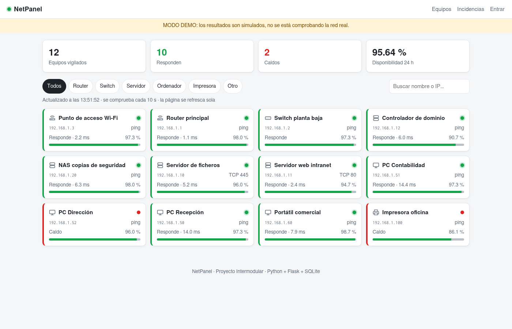
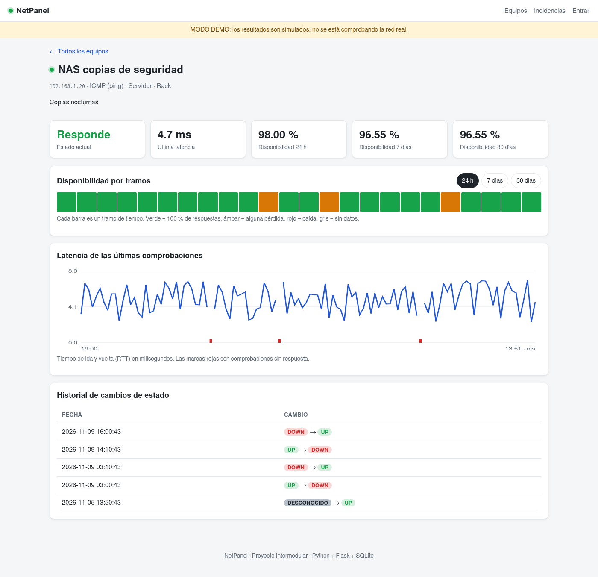

Proyecto Intermodular · Python + Flask + SQLite
Saber de un vistazo qué equipos de la red funcionan y cuáles no
NetPanel es una aplicación web que comprueba cada pocos segundos si los ordenadores, servidores, routers e impresoras de una red responden, muestra su IP y su latencia, y guarda el historial para calcular su disponibilidad (uptime).

El problema que resuelve
Sin monitorización
El técnico se entera de que el servidor de ficheros está caído cuando llama un usuario enfadado. No sabe desde cuándo falla ni si es la primera vez.
Con NetPanel
El panel lo marca en rojo en menos de un minuto, apunta la hora exacta de la caída y de la recuperación, y puede avisar por Telegram. Con el historial se ve qué equipos fallan a menudo.
Para quién
Pequeñas empresas, institutos, oficinas o una casa con varios equipos: sitios donde una herramienta como Zabbix o PRTG es demasiado grande o cara.
Qué hace
¿Responde o no?
Ping (ICMP) o conexión TCP a un puerto: 80 para una web, 445 para Samba, 3389 para escritorio remoto…
IP y latencia
Dirección, tipo de equipo, ubicación y tiempo de respuesta en milisegundos.
Disponibilidad
Porcentaje de respuestas en las últimas 24 h, 7 y 30 días, con barras por tramos y gráfica de latencia.
Caídas y recuperaciones
Registro con fecha y hora de cada cambio de estado y avisos opcionales por Telegram.
Alta, edición y baja
Desde la web (con usuario administrador) o importando un CSV con muchos equipos.
Pensada desde el principio
Contraseñas con hash, protección CSRF, validación de IP contra inyección de comandos y consultas SQL parametrizadas.
Pruébalo aquí mismo
GitHub Pages solo sirve páginas estáticas y no puede ejecutar Python, así que esta demo simula en tu navegador la lógica del monitor. Haz clic en un equipo para «desenchufarlo» y verás que no se marca caído al primer fallo, sino al segundo seguido (así se evitan falsas alarmas).
Cómo funciona por dentro
La aplicación tiene dos partes que trabajan a la vez dentro del mismo programa Python: un monitor que comprueba los equipos en segundo plano y un servidor web (Flask) que enseña los resultados. Se comunican a través de la base de datos SQLite.
Un ciclo de comprobación, paso a paso
- El monitor lee de la tabla
equiposlos que están activos. - Lanza las comprobaciones todas a la vez con un
ThreadPoolExecutor. Si se hiciesen una detrás de otra, 50 equipos caídos × 1 s de espera tardarían 50 s. - Para cada equipo ejecuta
ping -c 1 -W 1 IP(o abre una conexión TCP si tiene puerto) y mide la latencia. - Guarda el resultado en
comprobaciones: esto es el historial. - Aplica la regla: si responde → up; si falla 2 veces seguidas → down. Si el estado cambia, lo apunta en
eventosy avisa. - Borra el historial con más de 30 días y espera al siguiente ciclo.
¿Ping o TCP?
| Ping (ICMP) | Conexión TCP a un puerto | |
|---|---|---|
| Capa OSI | 3 · Red | 4 · Transporte |
| Qué demuestra | Que el equipo está encendido y es alcanzable | Que un servicio concreto está escuchando (web, ficheros…) |
| Cuándo falla aunque el equipo funcione | Si un cortafuegos bloquea ICMP (Windows lo hace por defecto) | Si el servicio está parado aunque la máquina esté encendida (¡y eso es lo que queremos saber!) |
| Ejemplos | Routers, switches, PCs, impresoras | 80/443 web, 22 SSH, 445 SMB, 3389 RDP, 53 DNS |

Tecnologías y por qué se eligieron
| Pieza | Tecnología | Motivo |
|---|---|---|
| Lenguaje | Python 3 | Sencillo, multiplataforma y muy usado en administración de sistemas y automatización. |
| Web | Flask | Microframework: poco código, fácil de entender entero. Django sería excesivo para este tamaño. |
| Base de datos | SQLite | Un solo fichero, sin servidor que instalar. Suficiente para cientos de equipos. |
| Plantillas | Jinja2 | Viene con Flask; escapa el HTML automáticamente (protege contra XSS). |
| Interfaz | HTML, CSS y JavaScript sin librerías | Funciona sin Internet dentro de una red cerrada de empresa; gráfica dibujada en SVG. |
| Producción | gunicorn + nginx + systemd | Estándar en servidores Linux: proceso robusto, HTTPS y arranque automático. |
| Laboratorio | Docker Compose | Red de pruebas con varios «equipos» que se pueden apagar a voluntad. |
¿Y por qué no usar Zabbix o Nagios?
Existen herramientas profesionales. Conocerlas y compararlas es parte del proyecto:
| Herramienta | Tipo | Ventaja | Inconveniente para una pyme pequeña |
|---|---|---|---|
| Zabbix | Libre | Muy completa: agentes, SNMP, plantillas, gráficas | Instalación y aprendizaje costosos (servidor, base de datos, frontend PHP) |
| Nagios Core | Libre | Estándar histórico, muchos plugins | Configuración por ficheros de texto, interfaz anticuada |
| PRTG | Comercial | Muy fácil, autodescubrimiento | De pago a partir de 100 sensores, solo Windows |
| Uptime Kuma | Libre | Bonita y sencilla | Pensada para webs/servicios más que para inventario de red |
| NetPanel | Libre (este proyecto) | Ligera, en español, se entiende y se adapta entera | Sin SNMP ni agentes (posibles mejoras futuras) |